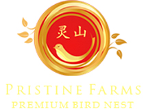

{% include section-grid-header.html %}

{% for i in (1..3) %}
<div class="section clearfix max-width-1400 section-our-product">
    <div class="container no-padding">
        <div class="background-cover" style="background-image: url('images/our-prod.jpg');">

        </div>
        <div class="box-decor clearfix">
            
            <div class="color-red">
                <span class="font-36">灵山</span>
                <p class="font-18">
                    自今年1月以来，马来西亚燕窝陆续进入中国内地市场，但销售模式发生了变化，中国原有燕窝品牌商沦为了马来西亚燕窝品牌代理商。
                </p>
            </div>
            <div class="box-decor-btn-wrap">
                <div class="box-decor-cross"></div>
                <div class="box-decor-btn">了解更多</div>
            </div>
        </div>
    </div>
</div>
{% endfor %}